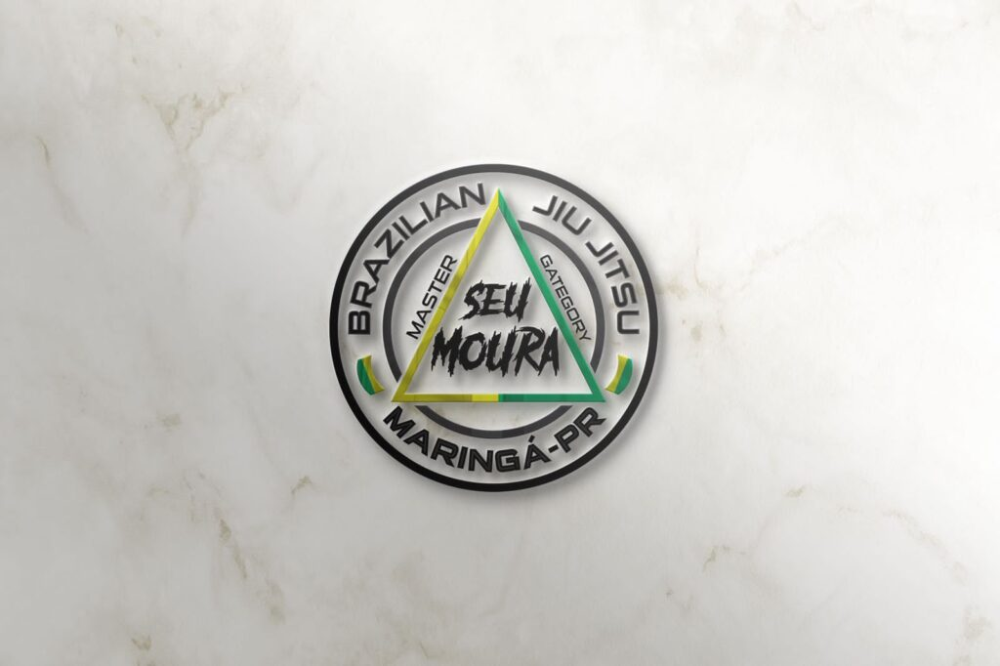
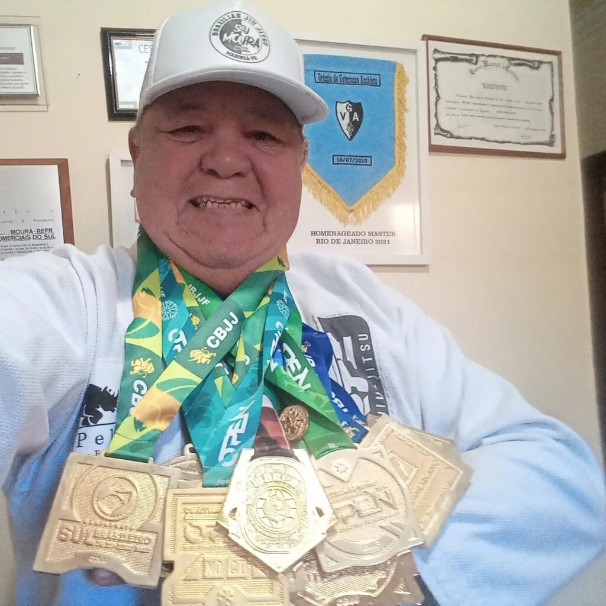

Uma página só sua, Mestre
"Acredite no seu potencial que mais tarde você será um criador de riquezas."
Mestre, essa é uma ideia que nasceu de admiração por tudo que o senhor já construiu — não só no tatame, mas na vida de tanta gente que passou pelas suas aulas.
Antes de qualquer coisa: isso ainda não é nada pronto. É só uma proposta, feita com carinho, pra ver se o senhor topa.
Capoeira dos 14 aos 20 anos. Corrida de São Silvestre. A Prova Pedestre Tiradentes, cruzada 5 ou 6 vezes. Jiu-Jitsu começado aos 52 — quando muita gente já parou, o senhor entrou de vez. Hoje, Faixa Preta 4º Grau. Comenda da Comunidade e Brasão de Maringá, pela Câmara Municipal. Mais de 21 mil pessoas te acompanhando no Instagram. E as aulas Kids de terça e quinta, formando família há anos.
Tricampeão Sul-Americano. Bicampeão Brasileiro. Bicampeão Internacional de Master. Fora isso, uma coleção de medalhas de ouro em circuitos estaduais e campeonatos Open. Uma bagagem que já validaria sozinha o título de lenda.
Se algum desses detalhes estiver errado ou incompleto, é só falar — essa página é rascunho, feito de fora pra dentro. Quem sabe a história certa é o senhor.
São fotos e vídeos direto do Instagram, sem tratamento ainda. Caso o senhor topar, vamos cuidar dessas imagens com o capricho que elas merecem.
Queremos ajudar o senhor a competir no Campeonato Master do Rio de Janeiro, em dezembro. Passagem, inscrição, hospedagem, tudo. Já escolhemos, com cuidado, um grupo de empresas de Maringá que acreditamos que vão querer fazer parte dessa missão.
Só falta uma coisa: saber se o senhor topa. Se topar, vamos pra cima com esse projeto honroso.
Já mapeamos 30 empresas de Maringá pra abordar. A JPX Digital já confirmou apoio; as outras, assim que o senhor topar, começamos a conversar.
Não é uma cota comercial nem um patrocínio formal — é uma contribuição direta e pessoal, de R$ 400, de um grupo pequeno de pessoas e empresas de confiança que topam ajudar a bancar essa missão.
Por enquanto isso acontece de forma simples: sem contrato, sem nota fiscal. Se a ideia crescer, a gente formaliza junto, com todo mundo que já estiver dentro.
Primeiro apoiador confirmado
JPX Digital Tecnologia Ltda
Essa página ainda não foi divulgada pra ninguém além de quem recebeu o link direto. Pedimos discrição até dezembro.
O Rio é o primeiro passo, não o último. Se der certo, a ideia é estruturar isso de verdade: formar o Instituto Seu Moura, pra levar esse trabalho mais longe — mais alunos, mais competições, mais impacto social através do esporte.
Por enquanto, é um passo de cada vez. Mas o legado do senhor merece durar muito além de dezembro.
Dá um alô e me conta o que achou?
Chamar no WhatsApp